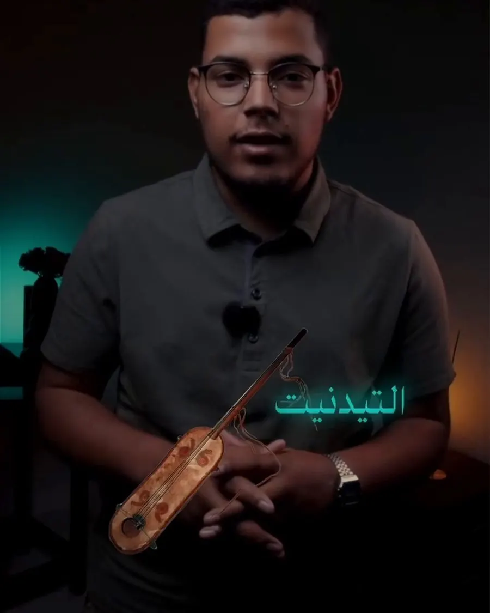

إعلامي ومقدّم برامج وفعاليات
عن عزيز المالكي
قدّمت على الشاشة برامج اجتماعية وثقافية، ووقفت أمام الجمهور مقدّمًا للفعاليات، وأقود اليوم فريق إعلام وتسويق في قطر.

باختصار
عزيز المالكي إعلامي ومقدّم برامج وفعاليات جزائري يعمل في قطر. قدّم على التلفزيون برنامج «حديث الشارع» الاجتماعي وبرنامج «أوتاد الخيام» الثقافي، وأسّس مع أصدقائه «لمردة»، برنامجًا أسبوعيًا عن الشعر والحكاية، ويقدّم الفعاليات أمام الجمهور. بدأ أمام الكاميرا في 2022، وعمل في الصحافة، وأشرف خلال دراسته الجامعية على إنتاج فيديوهات. يقود اليوم فريق الإعلام والتسويق في مجموعة صحاري بقطر. يحمل ليسانس في الكتاب والسنة من جامعة وهران 1 أحمد بن بلة، وتلقّى تكوينًا في صناعة المحتوى الرقمي من BBC Media Action.
نبذة عني
بدأت أمام الكاميرا في 2022، ثم أسست مع أصدقائي «لمردة»، برنامجًا أسبوعيًا عن الشعر والحكاية.
في التلفزيون قدّمت «حديث الشارع» الذي ينقل صوت الناس كما هو، و«أوتاد الخيام» عن الثقافة الحسانية. وعلى المسرح أقف أمام الجمهور مقدّمًا للفعاليات.
اليوم أعمل في قطر، وأقود فريق الإعلام والتسويق في مجموعة صحاري. أقدّم وأحاور وأكتب وأصوّر وأحرّر، وأبحث عن الفرص التي تجمعني بالجمهور أمام الكاميرا وعلى المسرح.
البرامج والأعمال
- حديث الشارع
برنامج اجتماعي ينقل أسئلة الناس وآراءهم من الشارع مباشرة.
- أوتاد الخيام
برنامج يعرّف بالثقافة الحسانية: شعرها وعاداتها وحياة الخيمة، كما يرويها أهلها.
- لمردة
برنامج أسبوعي عن الشعر والحكاية، يستعيد قصص الشعراء وأخبارهم بأسلوب قريب من المشاهد.
الإعلام والتسويق
قائد فريق الإعلام والتسويق — مجموعة صحاري، قطر · منذ 2026
أقود فريق الإعلام والتسويق في مجموعة صحاري: من فكرة المحتوى وتصويره إلى نشره على المنصات، في قطاع متخصص هو الهجن وصحتها.
المسيرة المهنية
- 2022
البداية أمام الكاميرا
تقديم وصناعة محتوى مستقل.
- 2023
التخرج الجامعي
ليسانس في الكتاب والسنة، جامعة وهران 1 أحمد بن بلة.
- 2026
التلفزيون
تقديم «حديث الشارع» و«أوتاد الخيام».
- 2026
قطر: مجموعة صحاري
قائد فريق الإعلام والتسويق.
الشهادات والتكوين
- شهادة جامعية
ليسانس في الكتاب والسنة
جامعة وهران 1 أحمد بن بلة · 2023
- دورة تدريبية
صناعة المحتوى الرقمي
BBC Media Action
مجالات الخبرة
التواصل المهني
للبرامج التلفزيونية والفعاليات والمؤتمرات والحوارات وإنتاج المحتوى، أسرع طريقة للتواصل هي واتساب.
مجالات التعاون
متاح للتعاون مع القنوات التلفزيونية، وشركات تنظيم الفعاليات والإنتاج، والمؤسسات الثقافية والرياضية، ووكالات العلاقات العامة والإعلان، والجهات الحكومية والخاصة.